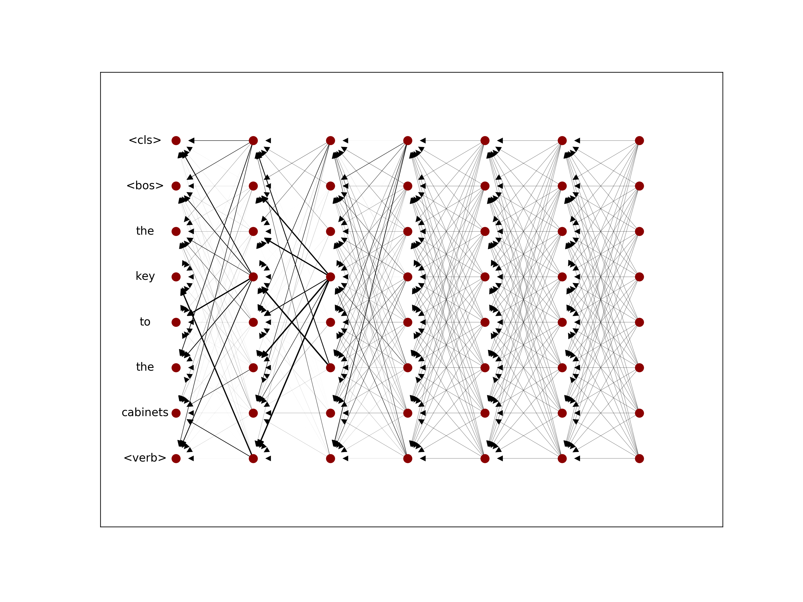

Attention (Bahdanau et al., 2015; Vaswani et al., 2017) has become the key building block of neural sequence processing models, and visualizing attention weights is the easiest and most popular approach to interpret a model’s decisions and to gain insights about its internals. Although it is wrong to equate attention with explanation (Pruthi et al., 2019; Jain & Wallace, 2019), it can offer plausible and meaningful interpretations (Wiegreffe & Pinter, 2019; Vashishth et al., 2019; Vig, 2019). In this post, we focus on problems arising when we move to the higher layers of a model, due to lack of token identifiability of the embeddings in higher layers (Brunner et al., 2020). We propose visualising and interpreting attention weights taking this phenomena into account!
We propose two simple but effective methods, Attention Rollout and Attention Flow, to compute attention scores to input tokens (i.e., token attention) at each layer, by taking raw attentions (i.e., embedding attention) of that layer as well as those from the precedent layers.
Attention to embeddings vs Attention to Input Tokens
In the Transformer model, self-attention combines information from attended embeddings into the representation of the embeddings in the next layer. Thus, across layers of the Transformer, information originating from different tokens gets increasingly mixed.
Hence, when looking at the $i$th self attention layer, we can not interpret the attention weights as the attention to the embeddings in the input layer. Because each embedding in this layer can potentially contain information from all embeddings in the previous layers. This makes attention weights unreliable as explanations probes when they are not directly applied on the input tokens. 
Let’s take a look at how self attention layers in a Transformer model change across layers. If we only look at the attention weights in the last layer, it seems all input tokens have equal contributions to the output of the model, since the attention weights in this layer are uniformly distributed. But if we also take into account the attention weights in the previous layers into account, we realise that some of the input tokens are getting higher attention.
So, if we want to use attention weights to understand how a self attention network works, we need to take the flow of information in the network into account! One way to do this is to use attention weights to approximate the information flow, while taking different aspects of the architecture of the model into account.
Information flow graph of a Transformer Encoder
This is a schematic view of self attention layer in the Transformer Model introduced in (Vaswani et al., 2017):

Multihead self-attention block
Given this attention module with residual connections, we compute values in layer $l+1$ as $V_{l+1} = V_{l} + W_{att}V_l$, where $ W_{att}$ is the attention matrix. Thus, we have $V_{l+1} = (W_{att} + I) V_{l}$. So, to account for residual connections, we add an identity matrix to the attention matrix and re-normalize the weights. This results in $A = 0.5W_{att} + 0.5I$, where $A$ is the raw attention updated by residual connections.
We can create the information flow graph of a Transformer model, using this equation as an approximation of how information propagates in the self attention layers. Thus, we can translate the attention weights in each layer to attention to input tokens.
The information flow in the network can be modelled with a DAG (Directed Acyclic Graph), in which the nodes are input tokens and hidden embeddings, edges are the attentions from the nodes in each layer to those in the previous layer, and the weights of the edges are the attention weights. Note that, augment this graph with residual connections to better model the connections between input tokens and hidden embedding.
From Attention to Embeddings to Attention to Tokens
Given this graph, based on how we interpret the weights associated with the edges, which are the raw attention weights, we can use different techniques to compute the attention from each node in the graph to the input tokens.
Attention Rollout
Assume the attention weights determine the proportion of the incoming information that can propagate through each link, i.e., the identities of input tokens are linearly combined through the layers based on the attention weights. Then, to compute the attention to input tokens in layer given all the attention weight in the previous layers, we recursively multiply the attention weights matrices, starting from the input layer up to layer .

Attention Rollout
Attention Flow
If we view the attention weights as the capacity of each link, the problem of computing the attention in layer to the input tokens reduces to the network flow problem, where we want to find the maximum flow value from each input token to each position in layer .

Attention Flow
How it all works in practice …

Let’s see an example of how these techniques work in practice! Applying this technique to a pretrained Bert model, we get some insights on how the models resolve pronouns. What we do here is to feed the model with a sentence, masking a pronoun. Next, we look at the prediction of the model for the masked word and compare the probabilities assigned to “her” and “his”.
As you can see, in the first example, Attention Rollout and Attention Flow are consistent with each other and the prediction of the model. Whereas, the final layer of Raw Attention does not seem to be consistent with the prediction of the models, and it varies a lot across different layers. In the second example only Attention Flow weights are consistent with the prediction of the model.
To see how it works for other examples, you can take a look at this notebook.
In our paper, “Quantifying Attention Flow In Transformers”, we show that compared to raw attention weights, the token attentions from attention rollout and attention flow have higher correlations with the importance scores obtained from input gradients as well as an input ablation based attribution method. Furthermore, we visualise the token attention weights and demonstrate that they are better approximations of how input tokens contribute to a predicted output, compared to raw attention weights.